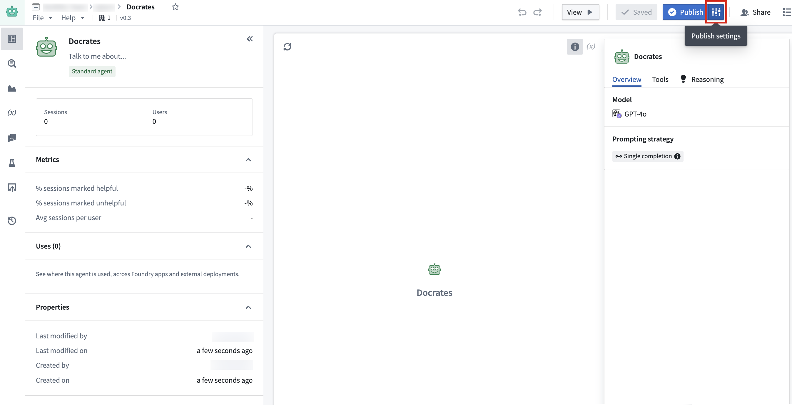
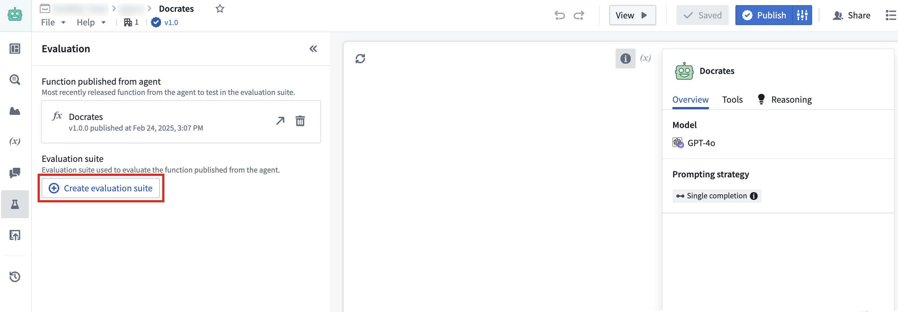
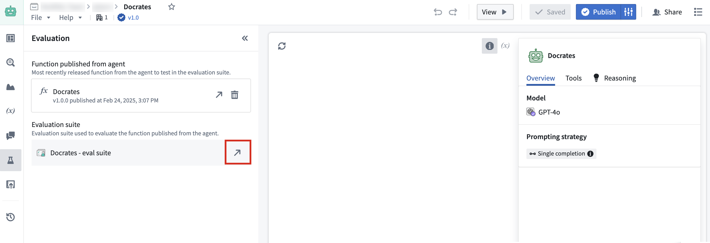
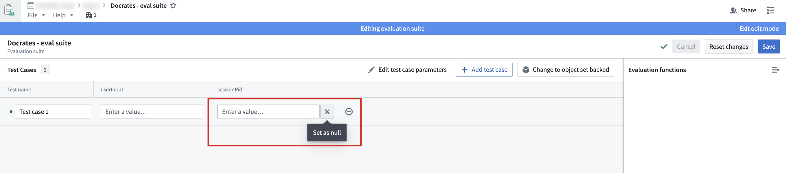
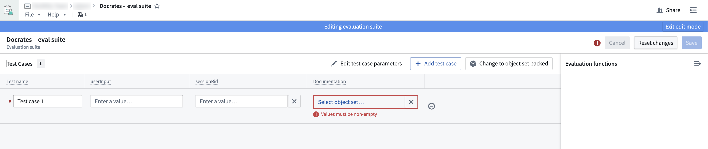

AIP Chatbots can be published as Functions, allowing them to be used anywhere in the platform where Functions can be executed. For example, builders can publish AIP Chatbots as Functions to evaluate them in AIP Evals, to automate chatbot workflows with Automate, or to use chatbots in Code Repositories. You can configure function versions to be published every time a chatbot is published, or every time a chatbot is saved.
The following are inputs taken by chatbots published as Functions:
userInput: The user input string that the chatbot will respond to.sessionRid (Optional): A string identifier for the current session with the following format:ri.aip-agents..session.{uuid}
sessionRid input empty. Do not provide an empty string; omit this input entirely.The following are outputs of chatbots published as Functions:
markdownResponse: The final text response generated by the chatbot, formatted using markdown.sessionRid: A string identifier for the current session with the following format:ri.aip-agents..session.{uuid}

After publishing, a toast notification will inform you that the chatbot and Function have been published, with a link to view the published Function in Ontology Manager. You can also view the Function by opening Publish settings and selecting it under Published function.
To disable Function publishing, open Publish settings and toggle the option to Publish function from chatbot off. If you disable this option, future published versions of your chatbot will not register your chatbot as a Function until the option is re-enabled. You can re-enable this option at any time. To publish a Function after re-enabling, publish the chatbot.
Publishing chatbots as Functions allows them to be evaluated with AIP Evals evaluation suites. To create an evaluation suite from Chatbot Studio, ensure that your chatbot has been published as a Function, then open the Evaluation tab on the left toolbar. Here, you can select Create evaluation suite, which will prompt you to name your suite and choose the same Project as the chatbot.

Note that the evaluation suite must be in the same Project as the chatbot. To open the evaluation suite in AIP Evals after creation, select the arrow icon to the right of the created suite.

Keep the following in mind when setting up your test cases in AIP Evals:
sessionRid is set to null. If a session RID is provided, the chatbot will continue an existing session, which is likely not the intent during testing.
null or contain a real value. Object set variables cannot be empty.
For more information on evaluation suites, refer to the AIP Evals documentation.